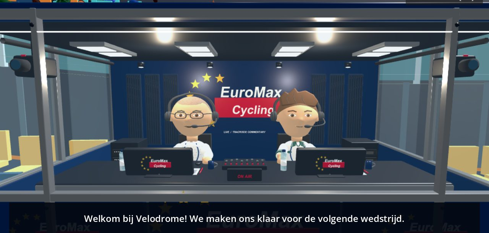
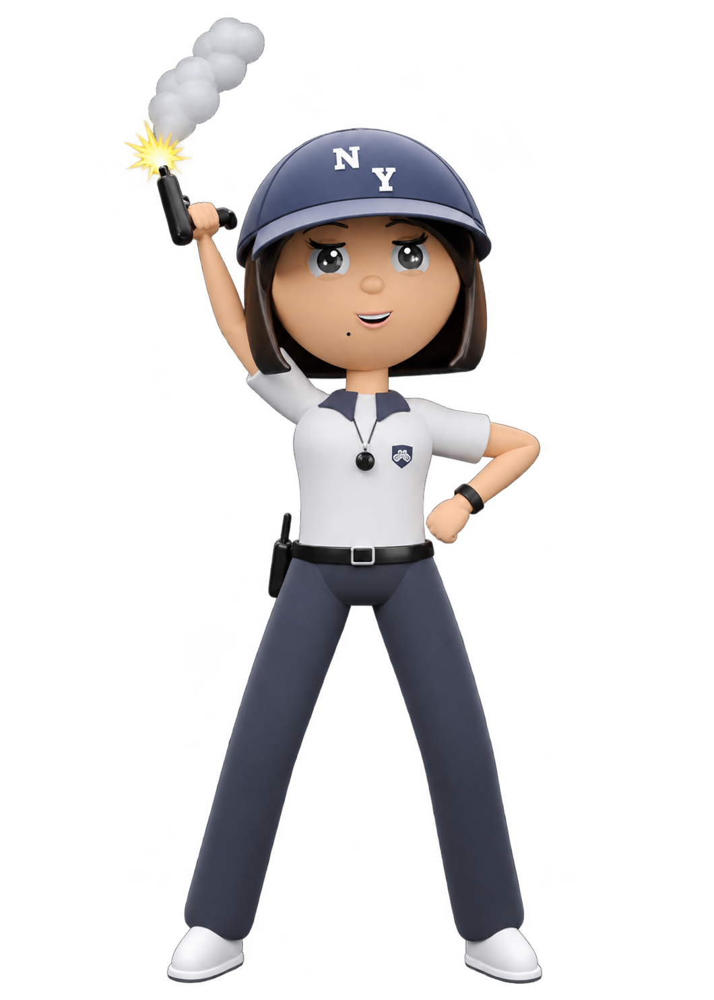

Vrije ERG Training
Maak je eigen workout of importeer een .zwo-bestand en train op het vermogen dat jij kiest.
Vélodrome is beschikbaar voor Windows en macOS. Bekijk de downloads.
Rijden in het wiel
Slipstream telt. Uit de wind blijven spaart energie voor later; een sprint die te vroeg komt, betaal je in de laatste bocht.
Tegenstanders met een eigen profiel
Sprinters, tijdrijders en aanvallers koersen elk op hun manier: wegspringen, het tempo hoog houden of wachten op de bel. Elke renner heeft een paspoort met zijn sterktes.
Echte watts, echte inspanning
Koppel een compatibele fietstrainer via het FTMS-protocol en voel de piste tot in je benen. Hellingsgraad en slipstream beïnvloeden de weerstand. Bestuur je renner met Zwift Ride of het toetsenbord en koppel je hartslagmeter via Bluetooth. Exporteer je rit naar Strava.
Ook zonder fietstrainer
Geen fietstrainer? Geen probleem. Regel je watts en stuur je renner met het toetsenbord. Zo kun je ook zonder extra hardware wedstrijden rijden en de sfeer op de piste beleven.
Wedstrijdvormen
Van scratch en puntenkoers tot temporace, afvalling, keirin en achtervolging: elke discipline vraagt een andere tactiek. Werk samen in een ploegachtervolging, ontdek de aflossing of bewijs je veelzijdigheid in het omnium. Kies je favoriete wedstrijd en neem het op tegen een virtueel peloton.


Een volle piste




Trainen op de piste en op vermogen
Bepaal je FTP met de ramp test of de 20-minuten FTP-test. Bouw workouts in de editor of importeer .zwo-bestanden. Op de piste oefen je de vliegende start, de handaflossing of het rijden achter de derny.
Klaar voor de start?

Vélodrome is gratis en open source. Download het spel voor Windows of macOS.